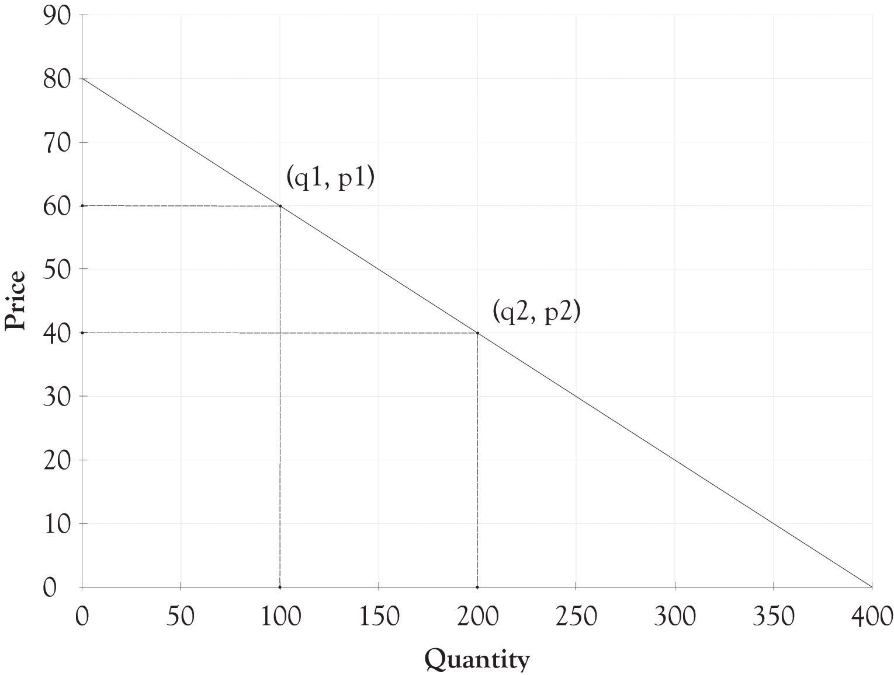
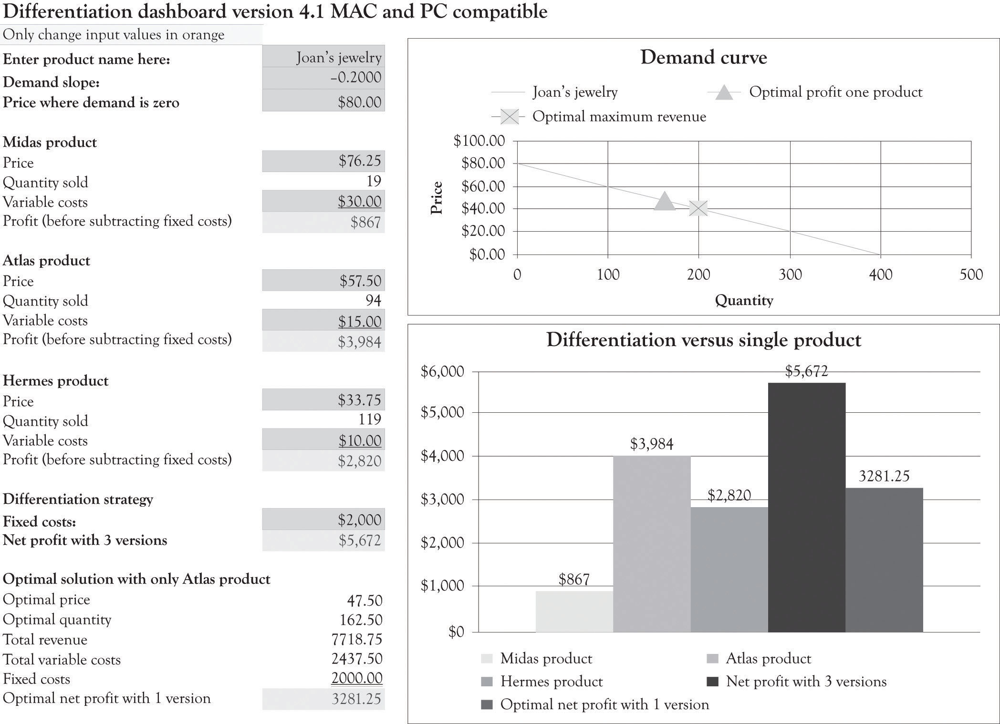

Even though Joan is an economist, her knowledge of the market for jewelry boxes was based on experience and insight. She understands the market because she has bought and sold jewelry boxes and their raw materials and she has built them from scratch. Joan decided she should put some of her economics training to work and determine the ideal price and quantity to sell that would generate the most profit.
The typical demand curve has the price on the y-axis and the quantity demanded on the x-axis and is downward-sloping.See the following Web site for a good discussion of the Law of Demand: http://www.investopedia.com/terms/l/lawofdemand.asp A demand curve can be represented as a linear mathematical formula with quantity as the dependent variable (q = −5p + 400) or with price as the dependent variable (p = −5q + 80). A demand curve is a very useful diagram for describing the relationship between the price level and the quantity demanded at each price level. In general, as the price of a product increases, the demand for the good decreases. Similarly, as the price of a product decreases, the demand for the good increases. This section discusses how the demand curve can be used to identify the optimal price and quantity for selling just one version of a product.
Since Joan is a near-monopoly working in a market characterized by monopolistic competition, she can set her variable costs and fixed costs within certain limits related to the features she has established for her Jewelry boxes. Joan used algebra to come up with the optimal selling price for her standard jewelry box. This is the price that generates the greatest profit given the $15 variable costs and the $2,000 fixed costs.
Her first task was to develop a demand equation. The demand equation relates the quantity of the good demanded by consumers to the price of the good. Demand equations are in the form: Price = constant + slope*Quantity. This can be calculated by finding the slope of the curve using any two points (see Figure 3.9 "Two Points Are Used to Derive the Demand Curve"). We will use the points (q1, p1) or (100, $60) and (q2, p2) or (200, $40). The slope is the rise over the run or:
Slope = (60 − 40)/(100 − 200) Slope = 20/−100 Slope = −0.2The constant is calculated by determining where the demand line crosses the y-axis or, in this situation, the price or P-axis. This is accomplished by using the point slope form of the demand equation and any point such as (100, $60). The resulting constant is 80.
p − p1 = slope(q − q1) p − 60 = −0.2(q − 100) p = 60 + 0.2q + 20 p = 80 − 0.2qFigure 3.9 Two Points Are Used to Derive the Demand Curve
In many instances, the demand curve is expressed in terms of p because the price determines the amount demanded. You can just substitute a price into the following formula and find out how many units will be sold.
q = −5p + 400So if Joan decides to price each box at $50, then she will be able to sell 150 units.
Now that the demand equation has been found (p = −0.2q + 80 or q = −5p + 400), Joan’s next step was to determine the quantity where profits are maximized. This is accomplished by identifying where marginal revenue equals marginal cost. This is completed in two steps. The first step is to substitute the demand curve equation into the total revenue equation in order to get the total revenue calculation in terms of the quantity sold or q.
p = 80 − 0.2q Total revenue = p × q Total revenue = (80 − 0.2q) × q Total revenue = 80q − 0.2q2The above equation can be used to express the total revenue as a function of the quantity produced. We can check this answer by substituting 200 into the total revenue equation. For example, the total revenue when production is 200 units would be 80 × 200 − 0.2 × 2002 or $8,000. This is the same value for total revenue using the p × q equation for total revenue ($40 × 200 = $8,000).
The second step is to find the quantity where marginal cost equals marginal revenue. This is accomplished by taking the first derivative of the total revenue equation with respect to q. This is then set to the marginal cost and then solved for q. The marginal cost is actually the variable cost in this example. The marginal cost to produce one additional jewelry box is $15.
Total revenue = 80q − 0.2q2 Marginal revenue = dtr/dq = 80 − 0.4q Marginal revenue = Marginal cost 80 − 0.4q = 15 −0.4q = −65 q = 162.5The 162.5 quantity is rounded up to 163 and then substituted into the p = 80 − 0.2q equation.
p = 80 − 0.2(163) p = 47.4The 47.4 price was rounded down to $47. This is the short-term optimal revenue solution.
Profit = $47 × 163 − $15 × 163 − $2,000 Profit = $3,216Joan decided after her analysis to produce fewer jewelry boxes since she could make more money selling fewer boxes at a higher price. She could have done a similar analysis using spreadsheet software and come up with a similar solution. She would, however, still need the original demand function along with an understanding of her variable and fixed costs to produce the jewelry boxes.
The demand dashboard can also be used to determine the optimum solution when there are three jewelry boxes. The optimum solution is calculated using a mathematical programming algorithm that is usually referred to as a solver add-on in spreadsheet programs (see Figure 3.10 "Optimal Profit with Three Versions of Jewelry Boxes"). The solver essentially identifies the price for the Athena, the Stryker, and the Natural that would maximize profit with all the other variables such as the variable costs remaining the same.
As you can see from Figure 3.10 "Optimal Profit with Three Versions of Jewelry Boxes", the optimal Athena price would be $76.25 and about 19 units would be sold. The optimal price for the Stryker would be $57.50 and about 94 units would be sold. The Natural would be priced at $33.75 and would sell 119 units. The net profit for all three versions would be $5,672. This is in contrast to the non-optimized solution of $4,500. Joan just picked prices for each version using her intuition and insight into what consumers would be willing to pay.
Figure 3.10 Optimal Profit with Three Versions of Jewelry Boxes
You should note that the optimal solution for only having the Atlas product is $3,281. This is little different than the $3,216 solution obtained using the algebraic solution detailed in the last section because we rounded the price and quantity in the algebraic solution.
The optimal solution provides insight into the demand curve and the product mix, but it is not a magic potion for setting prices and developing versions. There are a number of factors that go into identifying the price and the characteristics for each version. There might be significant setup costs for constructing the Athena or, perhaps, it would be difficult to find artistically talented employees to work on the fake pearl inlays for just a couple of hours. Perhaps Joan does not want to focus on the Natural because she wants to eventually focus on upscale jewelry boxes and she is concerned that her product would not be considered a high-end offering because of the proliferation of inexpensive jewelry boxes. And, of course, it is very difficult to actually know if the demand curve is valid for all levels of prices.
The demand curve for a good does not have to be linear or straight. As illustrated in Figure 3.11 "Nonlinear Demand Curve for Joan's Jewelry Boxes", the demand curve could be curvilinear. It appears that the price at which there is no demand is $80 and that there is essentially unlimited demand for jewelry boxes that cost $15. Let us examine how a different and, in particular, a nonlinear curve could influence the amount of revenues generated. Using Figure 3.11 "Nonlinear Demand Curve for Joan's Jewelry Boxes", if Joan charges $60 for the Athena unit, she would sell 50 units. If she charged $40 for the Stryker model, she would sell 50 units (100 − 50). If she charged $20 for the Natural, she would sell 150 units (250 − 100). If Joan still had the same variable cost structure as before, she would generate the following revenues and profit:
Profit = ($60 − $30) × 50 + ($40 − $15) × 50 + ($20 − $10) × 150 − $2,000 ← {fixed costs} Profit = $1,500 + $1,500 + $1,500 − $2,000 Profit = $4,500 − $2,000 Profit = $2,500Figure 3.11 Nonlinear Demand Curve for Joan's Jewelry Boxes

This amount is noticeably less than the $3,216 algebraic solution ($47 × 163 − $15 × 163 − $2,000) for the single version where it was assumed that demand was linear. This example illustrates that a slight miss in identifying the appropriate demand function can have a dramatic impact on profitability. Even though the demand and differentiation dashboards can only deal with linear relationships, we can estimate a linear function using only a portion of the demand curve. It appears that there is a linear relationship within the price range of $20–$80. The price where demand is zero (the Y intercept) and the slope of the demand curve were both estimated using the demand analysis dashboard as illustrated in Figure 3.12 "Demand Curve for Nonlinear Estimation". Figure 3.13 "Joan's Profit Using Estimates of Nonlinear Demand" shows the solution for the nonlinear demand curve using the differentiation dashboard. The key difference for this solution versus the solution that was presented earlier in the chapter is that the demand curve was estimated using points that were not linear with a linear regression algorithm. This leads to several interesting results.
Figure 3.12 Demand Curve for Nonlinear Estimation

Figure 3.13 Joan's Profit Using Estimates of Nonlinear Demand

The profit for one product using the optimal solution for the nonlinear curve is $1,415.69. Using Figure 3.13 "Joan's Profit Using Estimates of Nonlinear Demand", again you can see that when the original variable and fixed costs are entered in the differentiation dashboard, three versions produce a net profit of $2,458. This is in contrast to the $4,500 profit for the three versions using the original linear demand curve.
When the demand is nonlinear, economists use “tricks” to transform a nonlinear demand data into a linear formula.Oz Shy (2008). For example, they take the natural log of the price and quantity data and then perform the regression analysis in order to develop an estimate of the function. The trick I used was to estimate the demand function by only using prices between $20 and $80.
If a new product is being introduced, then there may not be any data available for estimating a demand curve. Historical data are often scarce or nonexistent for new products and significantly revised versions of products. Sometimes, the entrepreneur has only two points for estimating demand. The first point is where the price crosses the Y-axis. This is essentially the maximum amount that most consumers would be willing-to-pay for a product. The second point is also a guestimate using a hypothetical question. What demand would result if we were to introduce a product at the prevailing market price using typical product features?
The key takeaway is that it is difficult to model consumer demand when products are new and untested, and even where there is a proliferation of historical data, it is still a difficult task. Another takeaway is that versioning will almost always generate more revenues and also greater profits in the long run. The crucial activity is to constantly experiment and continuously introduce product versions in order to understand the constantly changing nature of consumer behavior. Quantitative tools can provide insight, but they should be used to provide insight and not used as a sole solution for pricing and versioning products.
From an economist point of view, the primary goal of versioning is to capture consumer surplus. As one of my economist colleagues (Bill Hamlen) noted, it is very difficult to develop a reasonable mathematically grand optimal solution for capturing consumer surplus with even two versions. Economists have not attempted to tackle the problem of versioning because of the mathematical complexity. I have taken the liberty of using the same demand curve for all the versions. In reality, there is a separate demand curve for each version. Bill Hamlen suggested that since it is so difficult to find a grand optimal solution, that I should continue the approach used in the book because it still provides an insight into the important issue of capturing consumer surplus from a strategy perspective.